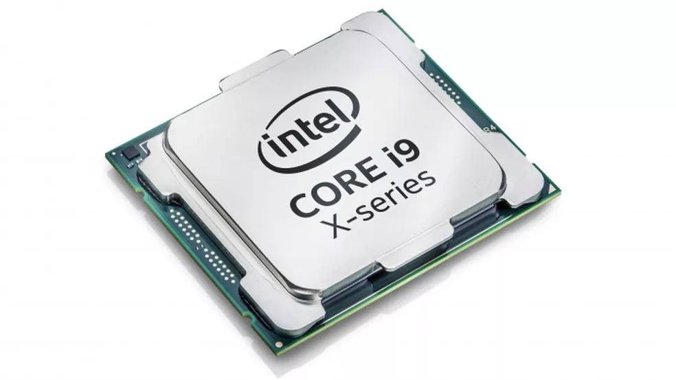
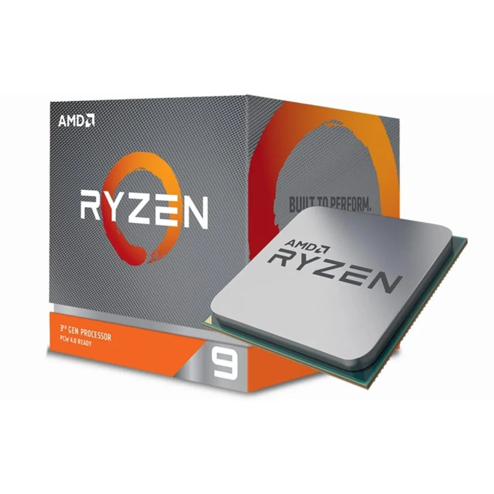
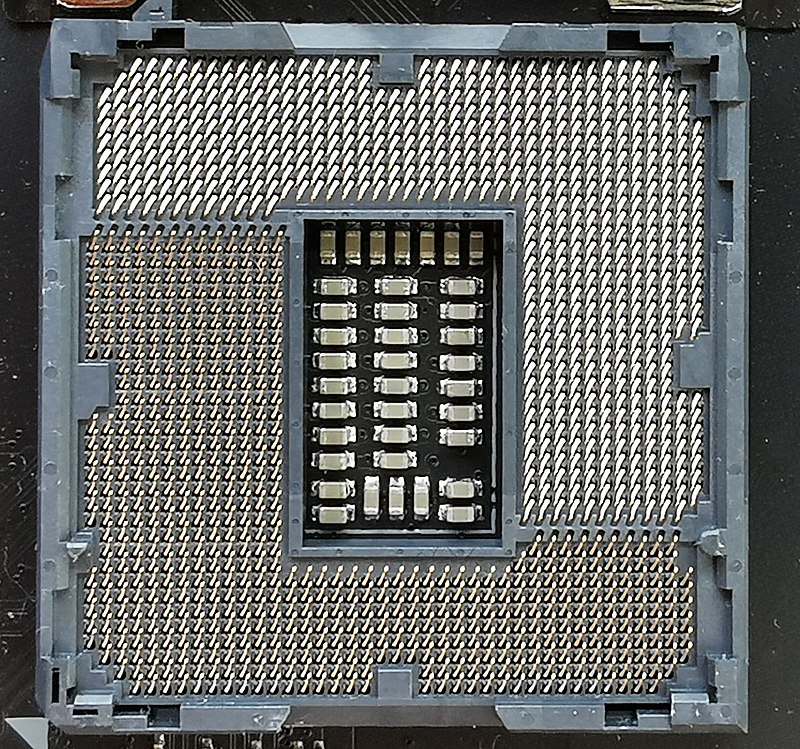

4.O que é processador?
Ele é o "cerébro" do computador pois ele organiza tudo que está sendo processado, envia dados para outras partes do computador, e resolve calculos digitados pelo usuário por exemplo.
5.Elabore uma tabela comparativa entre os processadores Intel e AMD, a partir do Dual Core.
| |
Intel |
Amd |
| Processadores |
core 2 duo |
I3 1220PE |
I5 12600HX |
I7 12850HX |
I9 12900HX |
Athlon X2 555 |
ryzen 3 3300X |
ryzen 5 5600X |
ryzen 7 5800X |
ryzen 9 5900X |
| Núcleos |
2 |
8 |
12 |
16 |
16 |
2 |
4 |
6 |
8 |
12 |
| Thread |
2 |
12 |
16 |
24 |
24 |
2 |
8 |
12 |
16 |
24 |
| Frequêcia |
3.00 GHz |
4.20 GHz |
4.60
GHz |
4.80
GHz |
5.00
GHz |
3.10 GHz |
4.30 GHz |
4.60 GHz |
4.70 GHz |
4.80 GHz |
| Cachê |
6MB |
12MB |
18MB |
25MB |
30MB |
1MB |
16MB |
32MB |
32MB |
64MB |
| TDP |
65W |
20W |
45W |
45W |
45W |
65W |
65W |
65W |
105W |
105W |
Notas: A cor indica o equivalente de cada marca e ao processador citado.
O TDP está sendo considerado o mínimo para conseguir com que o processador funcione (Emalguns casos não 100% corretamente).
A frequêcia considerada é a máxima.
O cachê considerado é o máximo em alguns dos processadores o equivalente ao (L3).
Todas as informações foram tiradas dos sites do fabricante.
 
14. O processador é colocado em um conector específico chamado SOCKET. Comente sobre sua função, modelos e processador que pode conectar.
O Socket simplificando é aonde o processador será inserido na placa mãe.
Seus tipos são LGA, PGA e BGA a diferença entre eles é a entrada dos pinos.
Para saber qual socket o processador será inserido primeiro deve-se saber qual de qual marca e modelo de processaor você comprou (AMD ou Intel), pois uma mesma marca pode usar diversos tipos de encaixes diferentes, para ai sim escolher a placa mãe (minha concepção).
de socket.

15. Qual a estrutura interna do processador, ou seja, seus componentes? Explique cada um deles.
A estrutura dele é definida nesses componentes
Unidade lógica e aritmética: Tem o objetivo de controlar as ações feitas pelo computador, basicamente controla as ações no exterior da CPU.
Unidade de controle: Função de ativar instruções de programas, como matemática, sendo essa unidade que realiza operações de adição, é conhecida como uma grande calculadora eletrônica.
Registradores: basicamente armazenam comandos e valores, como o endereço de uma próxima execução, ou armazenar algum endereço da pilha de execução de algum programa.
Unidade de Gerenciamento de Memória: Traduz endereços virtuais em endereços físicos.
Unidade de ponto flutuante: É o hardware dedicado a executar operações matemáticas de dados representados em ponto flutuante em um computador.
Topo